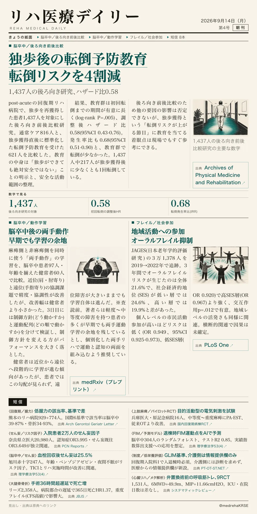
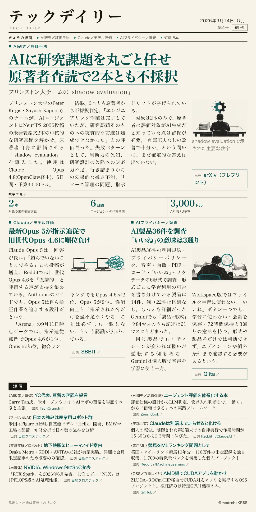

リハ医療デイリー
独歩後の転倒予防教育 転倒リスクを4割減
1,437人の後ろ向き研究、ハザード比0.58
回復期リハ病院で独歩を再獲得した直後に、標準化した転倒予防教育を行うと転倒は減るのか。脳卒中患者1,437人の後ろ向き前後比較研究の数字を見る。

テックデイリー
AIに研究課題を丸ごと任せ 原著者査読で2本とも不採択
プリンストン大チームの「shadow evaluation」
「AIが自らAI研究を加速する」という前提は、思ったより早く実現しないかもしれない。未発表論文を使った新しい評価実験の数字を見る。
